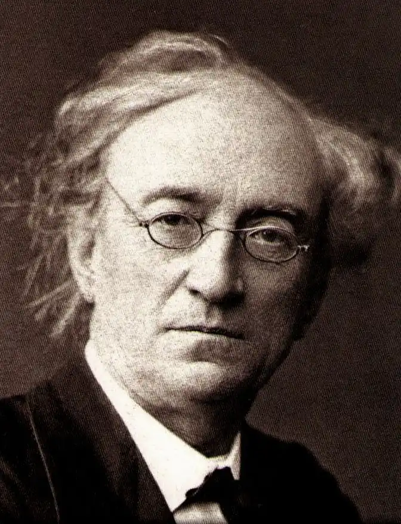
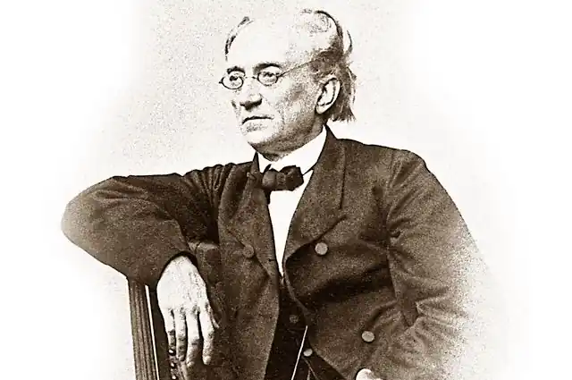

ТЮТЧЕВ, Федір Іванович (Тютчев, Фёдор Иванович — 23.11.1803, Овстут — 15.07. 1873, Царське Село) — російський письменник.Тютчев народився у садибі Овстуг Брянського повіту Орловської губернії у давній дворянській родині. Його дитинство минуло в садибі Овстузі, у Москві та підмосковному маєтку Троїцьке. У сім'ї панував патріархальний поміщицький побут. Тютчев, рано виявивши нахили до навчання, здобув добру домашню освіту. Його вихователем був поет і перекладач С. Раїч (1792—1855), котрий познайомив Тютчева з творами античності та класичної італійської літератури. У 12 років майбутній поет під керівництвом свого вчителя перекладав Горація і писав, наслідуючи його, оди. За оду "На новий 1816рік" у 1818 р. був удостоєний звання співробітника Товариства любителів російської словесності. У "Працях" Товариства у 1819 р. був уперше опублікований його твір — вільний переспів "Послання" Горація до Мецената.
У 1819 р. Тютчев вступив на відділ словесності Московського університету. За роки навчання зблизився з М. Погодіним, В. Одоєвським. У той час почали формуватися його слов'янофільські нахили. Будучи студентом, Тютчев писав і вірші. 1821 р. закінчив університет і отримав місце в Колегії іноземних справ у Петербурзі. У 1822 р. його призначили позаштатним чиновником російської дипломатичної місії у Мюнхені.
У Мюнхені Тютчев як дипломат, аристократ і літератор опинився у центрі культурного життя одного з найбільших міст Європи. Вивчав романтичну поезію і німецьку філософію, зблизився з Ф. Шеллінґом, подружився з Г. Гайне. Переклав російською мовою вірші Гайне (перший із російських поетів), Й. К. Ф. Шиллера, Й. В. Ґете та ін. німецьких поетів. Власні вірші Тютчев публікував у російському журналі "Галатея" і альманасі "Північна ліра" ("Северная лира"). У 1820—1830 pp. були створені шедеври філософської лірики Тютчева "Silentium!" (1830), "Heme, що мислите, природа..." ("Не то, что мните вы, природа...", 1836), "Про що так віє вітровій?.." ("О чем ты воешь, ветр ночной?..", 1836) та ін. У віршах про природу була очевидною головна особливість тютчевської творчості на цю тему: єдність зображення природи і думки про неї, філософсько-символічний зміст пейзажу, олюдненість, одухотвореність природи: Не те, що мислите, природа:Не зліпок, не бездушна твар —В ній є душа, в ній є свобода,В ній мова є й любові жар...("Не те, що мислите, природа", тут і далі пер. Р. Ладики)У 1836 р. у пушкінському журналі "Современник" за рекомендацією Т. Вяземського і В. Жуковського була опублікована збірка з 24 віршів "Вірші, надіслані з Німеччини" ("Стихи, присланные из Германии"), підписана "Ф.Т.". Ця публікація стала етапною у його літературній долі, принесла йому визнання. На загибель О. Пушкіна Т. відгукнувся пророчими рядками: "Тебе, немов кохання перше, // Росії серце не забуде" ("29-е січня 1837"). У 1826 р. Тютчев одружився з Е. Петерсон, потім захопився А. Лерхенфельд (їй він присвятив кілька віршів, серед яких — відомий романс "Я вас зустрів —і все минуле..." ("Я встретил вас — и все былое...", 1870). Роман з Е. Денберг виявився настільки скандальним, що Тютчева перевели із Мюнхена у Турин. Тютчев важко пережив смерть дружини (1838), проте незабаром одружився з Денберг, самовільно виїхавши для вінчання у Швейцарію. За це його звільнили з дипломатичної служби і позбавили звання камергера. Упродовж кількох років Тютчев залишався у Німеччині, а в 1844 р. повернувся у Росію. З 1843 р. виступав зі статтями панславістського спрямування "Росія і Німеччина", "Росія і Революція", "Папство і римське питання", працював над книгою "Росія і Захід". Він вважав, що російське царство повинно простягатися "від Нілу до Неви, від Ельби до Китаю". Політичні погляди Тютчева були прихильно зустрінуті імператором Миколою І. Автору повернули звання камергера, у 1848 р. він отримав посаду у міністерстві іноземних справ у Петербурзі, у 1858 р. його призначили головою Комітету іноземної цензури. У Петербурзі Тютчев одразу ж став помітною постаттю суспільного життя. Сучасники відзначали його блискучий розум, почуття гумору, талант співрозмовника. Його епіграми, жарти й афоризми були надзвичайно популярними. У 1850 р. у "Современнику" була опублікована стаття М. Некрасова, в якій він зарахував вірші Тютчева до найяскравіших явищ у російській поезії та поставив Тютчева в один ряд з О. Пушкіним і М. Лермонтовим. У 1854 р. у додатку до "Современника" були опубліковані 92 вірші Тютчева, а потім видана його перша поетична збірка (1854) під редакцією І. Тургенєва. Л. Толстой називав Тютчева "одним із тих нещасних людей, які значно вищі за натовп, у якому живуть, і тому завжди самотні". Поезія Тютчева означувалася дослідниками як філософська лірика, в якій, за висловом Тургенєва, думка "ніколи не постає перед читачем оголеною і відстороненою, але завжди зливається з образом, взятим зі світу душі чи природи, про-сякається ним, і проникає у нього нероздільно і нерозривно". Повною мірою ця особливість його лірики виявилася у віршах "Видиво" {"Видение", 1829), "День і ніч" ("День и ночь", 1839) та ін. Слов'янофільські погляди Тютчева продовжували зміцнюватися, хоча після поразки Росії у Кримській війні він почав бачити завдання слов'янофільства не в політичному, а в духовному єднанні. Суть свого розуміння Росії поет висловив у вірші "Умом Росії не збагнуть..." ("Умом Россию не понять...", 1866): Умом Росії не збагнуть,Аршином спільним не обмірять:У неї особлива суть —В Росію можна тільки вірить.Та поміж тим його погляди, його спосіб життя були європейськими: він був світською людиною, не любив сільського життя, не надавав великої ваги православним обрядам. Як і все своє життя, у зрілі роки Тютчев був пристрасною людиною. У 1850 р., уже одружений, батько сімейства, він закохався у 24-річну Є. Денисьєву, котра була майже ровесницею його доньок. Публічний зв'язок між ними, упродовж якого Тютчев не залишав сім'ю, тривав 14 років, у них народилося троє дітей. Суспільство сприйняло це як скандал, від Денисьєвої відрікся батько, її викреслили зі світського життя. Усе це спричинило у неї важкий нервовий розлад, а у 1864 р. вона померла від туберкульозу. Вражений смертю коханої жінки, Тютчев створив "денисьєвський цикл" — вершину інтимної лірики. До нього ввійшли вірші "О, як же ми убивчо любим..." ("О, как убийственно мы любим...", 1851), "Я очі знав, — о, що за очі!.." ("Я очи знал, — о, эти очи!..", 1852), "Останнялюбов" ("Последняя любовь", 1851—1854), "Напередодні річниці 4серпня 1865р."("Накануне годовщины 4 августа 1865 г.", 1865). Кохання, оспіване у цих віршах як найвище, дане людині Богом, як "і блаженство, і безнадія", стало для поета символом людського життя загалом — страждань і захоплення, надії і відчаю, минущості того єдиного, що доступне людині, — земного щастя. У "денисьєвському циклі" любов постає як "фатальний поєдинок" двох сердець: О, як на схилі наших днівМи любим ніжно і марновірно...Прощальні світить хай вогніЛюбов остання, зоря вечірня!Тінь охопила небокрай,Лиш десь на заході видно сіяння, —Вечірній дню, зажди, не поспішай, Тривай, тривай, зачарування.Нехай міліє в жилах кров,Та ніжність в серці не міліє...Моя остання ти любов!Моє блаженство й безнадія.("Остання любов")Після смерті Денисьєвої, у якій він звинувачував себе, Тютчев поїхав до сім'ї за кордон. Рік провів у Женеві та Ніцці, але, повернувшись у Росію (1865), йому довелося пережити смерть двох дітей від Денисьєвої, потім — матері. За цими трагедіями були й інші — смерть ще одного сина, єдиного брата, доньки. Жах перед невмолимою смертю звучить у вірші "Мій брате, мій супутник у житті..." ("Брат, столько лет сопутствовавший мне...", 1870), у рядках якого поет передчуває свою "фатальну чергу". Помер Тютчев у Царському Селі 15 липня 1873 р. Ю. Іванов